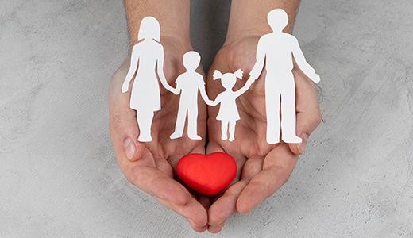
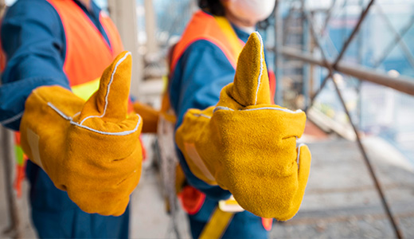
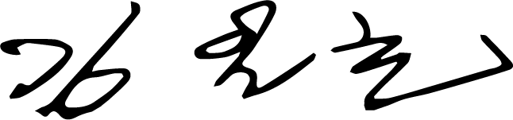

홈
>
안전경영
>
방침
방침
코오롱글로벌은 안전보건에 관한 사회적 책임과 종사자, 시민의 안녕을 위하여 기업 경영활동 전반에서 안전보건경영을 최우선 핵심가치로 실천하고 법규 및 기준을 준수하는 안전보건 관리체계를 구축 하여 고객, 주주, 협력업체 임직원, 근로자, 지역사회로부터 신뢰받는 초일류 기업을 목표로 지속적으로 정진하고 있습니다.
-
- 01. 기본원칙 준수
- 코오롱글로벌 전 임직원은 안전사고 예방을 위하여 종사자와 시민의 안전보건 의견을 수렴하고 필요한 정보를 제공함으로서 안전보건경영활동에 대한 투명성을 확보하고 안전보건 관련법령에 따른 기본원칙과 지침을 준수한다.
-
- 02. 안전보건 프로세스
- 코오롱글로벌 전 임직원은 사업을 추진함에 있어 발생 가능한 위험성을 근로자의 참여를 통해 사전에 예측하고 유해·위험요인 제거와 예방을 위한 지속적인 안전보건프로세스 개선을 통해 자율적인 안전보건 컴플라이언스 실행체계가 운영될 수 있도록 최선을 다한다.
-

- 03. 안전 건강한 일터
- 코오롱글로벌을 구성하는 조직은 안전보건목표 및 세부추진계획을 설정하고 주기적인 이행 상태를 검토하여 안전보건 컴플라이언스체계를 강화하고 발전시켜 안전문화를 정착하고 안전보건활동 및 지원을 통해 안전하고 건강한 일터를 조성한다.
-
- 04. 교육과 훈련
- 코오롱글로벌을 구성하는 조직은 모든 종사자가 자신의 직무와 관련된 위험요인을 인지하게 하고, 위험요인 제거. 대체 및 통제 기법에 관해 교육·훈련을 실시한다.
-

- 05. 안전한 작업환경
- 코오롱글로벌은 '근로자의 생명 보호'와 '안전한 작업환경 조성' 을 기업활동의 최우선 목표로 삼는다.
-
- 06. 안전보건관리체계
- 코오롱글로벌은 사업장에 안전보건관리체계를 구축하여 사업장의 위험요인 제거 · 통제를 위한 충분한 인적·물적 자원을 제공한다.
-
- 07. 안전 요구사항 준수
- 모든 공급자와 계약자가 코오롱글로벌의 안전보건 방침과 안전 요구사항을 준수하도록 한다.
-
- 08. 책임과 의무
- 모든 종사자는 안전보건활동에 대한 책임과 의무를 성실히 준수하도록 한다.
(주) 코오롱글로벌
안전보건 관리 실장
김일호

2022.01.03